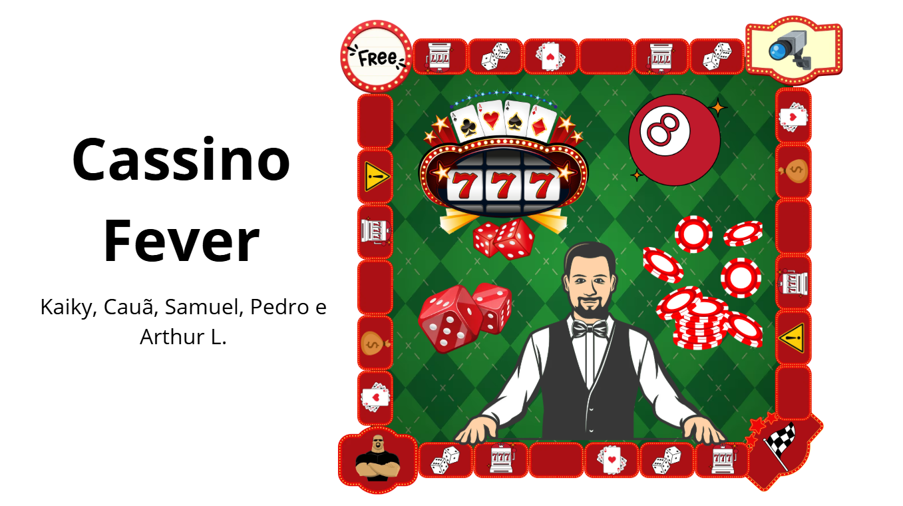

Jogo de Matemática - Probabilidade
Indicada pelo professorDescrição
Fizemos um jogo de tabuleiro baseado no princípio da contagem matemática para jogar o jogo. Foi legal e divertido.
Justificativa
Essa atividade representa bem o meu aprendizado no trimestre porque reúne os principais conteúdos e habilidades que desenvolvi durante as aulas. Ao realizá-la, pude colocar em prática o que aprendi, perceber minha evolução e compreender melhor os assuntos estudados.
Habilidades desenvolvidas
C5
H30
H31
Evidências — fotos e registros
